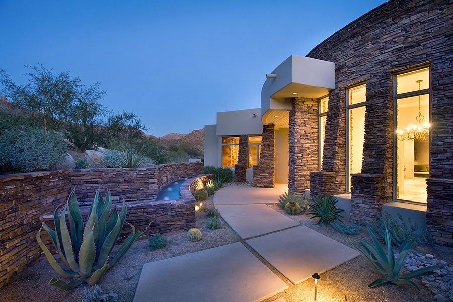

Areas served
Hillside residences, remodels and outdoor living on the slopes above Tucson — Ventana Canyon, Skyline, Pima Canyon, Finger Rock and the streets off Sabino Canyon Road.

Building here
The Foothills is unincorporated Pima County, not City of Tucson, and that single fact changes the whole job. Permits go through Pima County, and most of the good lots fall under the hillside development standards — slope limits, protected peaks and ridges, restrictions on how much of the natural terrain you are allowed to disturb, and colour and reflectivity rules on everything you can see from below.
Builders who work these lots occasionally treat the ordinance as an obstacle to be argued with. We treat it as the first design constraint. It is the difference between a house that reads as part of the slope and one that looks like it landed there.
One Foothills client put it more plainly than we would: the house came in on time and on budget under that ordinance, and passed every inspection on the first try.
What a Foothills build asks for
Steep ground drives the cost long before the finishes do. Retaining, over-excavation, how a concrete truck physically reaches the pour, where the crane sets up — all of it is decided by the driveway, and the driveway is decided by the slope.
Foothills lots shed water fast and in specific places. Getting the drainage right protects the house, the neighbours downhill and the permit. Getting it wrong is the most expensive correction on this kind of site.
The County cares what the house looks like from the valley floor: muted colours, limited reflectivity, restraint on the ridgeline. Designing to that from day one is what keeps the review short.
The practical details
We are a licensed Arizona general contractor working throughout Pima County, with decades of hillside work behind us. If you are weighing two lots, we will walk both with you before you commit to either.
“Our home was completed ON TIME and on BUDGET, despite falling under the County's onerous and restrictive hillside ordinance … The house passed every inspection on the FIRST try.”Homeowner · Custom home client

Send us the parcel number and the scope. We will tell you honestly what the site is going to ask of the budget.